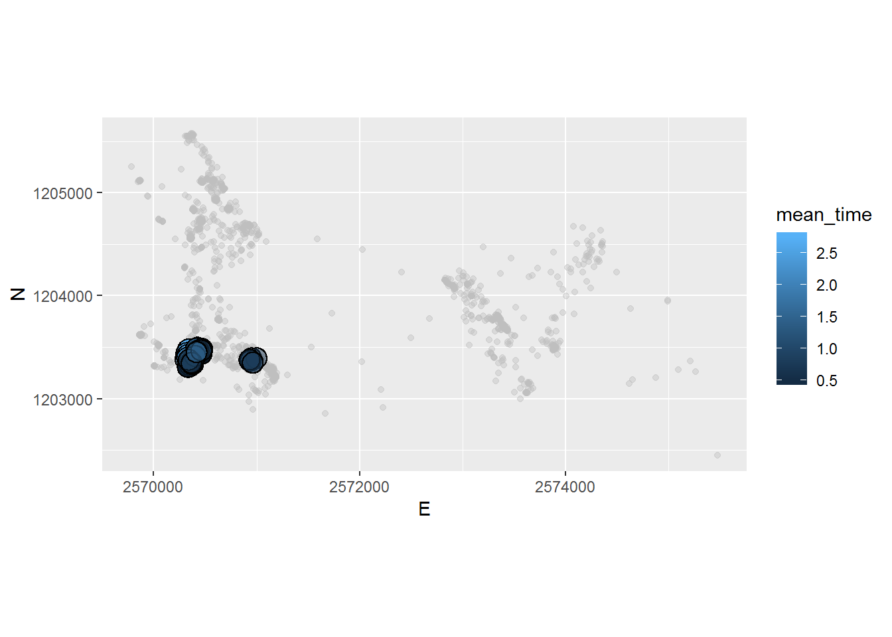

Exercise 5
Learning Outcomes
- You are able to access state-of-the-art spatial data within R and know basic operations for annotating your trajectories with geographic context.
Prerequisites
Preperation
Open your R Project from last week. Either run your own script from last week or the following lines to transform the data into the form we need for today’s exercise. Important: Reinstall the package CMAtools since we have a few updates.
devtools::install_git("https://github.engineering.zhaw.ch/PatternsTrendsEnvironmentalData/CMAtools.git") # Reinstall this package, since we have a few updateslibrary(tidyverse)
library(CMAtools)
library(sf)
library(ggspatial)
library(raster)
# Import as tibble
wildschwein_BE <- read_delim("../CMA_FS2018_Filestorage/wildschwein_BE.csv",",")
# Convert to sf-object
wildschwein_BE = st_as_sf(wildschwein_BE, coords = c("Long", "Lat"), crs = 4326,remove = FALSE)
# transform to CH1903 LV95
wildschwein_BE <- st_transform(wildschwein_BE, 2056)
# Add geometry as E/N integer Columns
wildschwein_BE <- st_coordinates(wildschwein_BE) %>%
cbind(wildschwein_BE,.) %>%
rename(E = X) %>%
rename(N = Y)
# Compute timelag, steplength and speed
wildschwein_BE <- wildschwein_BE %>%
group_by(TierID) %>%
mutate(
timelag = as.numeric(difftime(lead(DatetimeUTC),DatetimeUTC,units = "secs")),
steplength = euclid(lead(E, 1),lead(N, 1),E,N),
speed = steplength/timelag
)Tasks
Tasks 1: Import and visualize spatial data
- Import the dataset
Feldaufnahmen_Fanel_2016.shp(read_sf()) and save it to the variablefanel2016. - Transform the coordinates to
CH1903+ LV95 - Filter the dataset
wildschwein_BEto the period 01.04.2016 to 30.09.2016 and store the data in a new variable (wildschwein_BE_2016) - create a minimum convex polygon for each individual in
wildschwein_BE_2016and store it in a new variable (mcp2016) - import the file
pk100_BE_2056.tif - Create a map with the layers
pk100_BE_2056.tif,fanel2016andmcp2016

Task 2: Extract spatial information
We would like to know what crop was most used during what time. Use st_join() to extract the attributes from fanel2016 with wildschwein_BE_2016. Visualize the number of samples in each category of Frucht over the course of the filtered time period.
Figure 1: The number of samples per category per week from April to September 2014.
Task 3
Think of other ways you could visually explore the spatio temporal pattern of wild boar in relation to the crops. For example;
- Visits in relation to availability
- Normalized usage (e.g. 1 equalling to the temporal maximum of each crop)
Task 4
We have prepared a Normalised Digital Surface Model (nDSM) by calculating the difference between the digital surface models (DSM) and the digital terrain model (DTM) obtained from the geoportal from the canton bern. This nDSM is available on moodle (DOD.tif). Import this data with raster()and extract the data to your sf object (wildschwein_BE_2016). Explore the dataset spatiotemporally similar to the crop data in task 2/3.
Task 5: Determine revisited sites
Use the package recurse (function getRecursions) to determine sites which are often visited.
